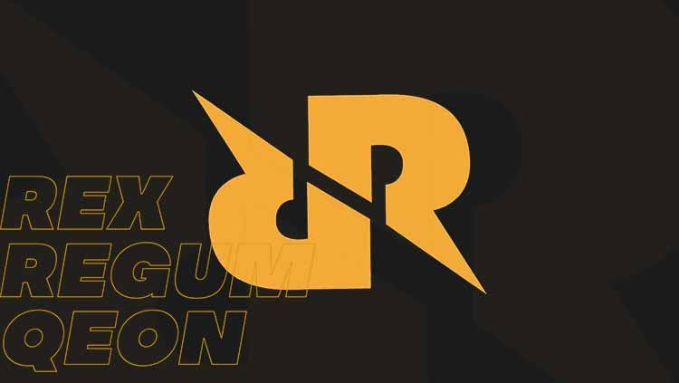

REX REGUM QEON

Sejarah Singkat RRQ
Didirikan pada Oktober 2013, tim ini awalnya terdiri dari para pemain DotA 2 terbaik asal Indonesia yang sudah dikenal baik dalam komunitas esports internasional.
Sejauh ini RRQ telah mendapatkan lebih dari ratusan pencapaian dari berbagai perlombaan esports tingkat nasional bahkan internasional. Prestasi ini tentunya disumbangkan oleh berbagai divisi yang ada di Rex Regum Qeon.
Rex Regum sendiri memiliki arti terjemahan dari bahasa Latin, yaitu king of kings, atau raja segala raja.
Kini RRQ terdiri dari 6 divisi dengan 9 tim yang beranggotakan 34 atlet esports. Beberapa divisi sudah tidak eksis lagi, seperti DotA 2, Point Blank, dan Arena of Valor (AOV).
RRQ Divisi Mobile Legends
Bermula sejak bulan Agustus 2017 dengan diakuisisinya roster Mobile Legends: Bang Bang (MLBB) Oxygen (O2), Rex Regum Qeon resmi melebarkan sayapnya di ranah esports Mobile Legends.
RRQ O2 beranggotakan para pemain terbaik di Mobile Legends yang selalu berada di deretan teratas top global dunia, meskipun terkadang harus tersalip pemain lain.
Saat ini divisi MLBB RRQ memiliki 2 tim, yaitu: RRQ Hoshi dan RRQ Sena. RRQ O2 memang sudah tidak eksis lagi dalam laman resmi RRQ namun beberapa anggotanya bersarang di RRQ Hoshi. RRQ Hoshi inilah yang saat ini eksis bertanding di kancah nasional dan internasional.
Saat ini, RRQ Hoshi beranggotakan:
1. M ‘Lemon’ Ikhsan
2. Diky ‘TUTURU’
3. Rivaldi ‘R7’ Fatah
4. Yesaya ‘Xin’ Omega
5. Calvin ‘Vyn’
6. Joshua ‘LJ’ Darmansyah
7. James ‘Jamesss’ Chen
8. Mohd ‘WizzKing’ Zulkarnain
Daftar Prestasi Rex Regum Qeon
Juara 2 Straits Championship
Juara 1 Mobile Star Leaguage Season 2
Juara 1 Mobile Legends Profesional leaguage Season 2
Juara 1 MEC Showdonw Profesional Bracket 2018
Juara 1 Mobile Legend Celebration Cup 2018
Juara 2 Mobile Legends Profesional Leaguage Season 4
Juara 2 Mobile Legends World Championship (M1)
Juara 1 Mobile Legends Profesional Leaguage Season 5
Juara 1 Mobile legends Profesional Leaguage-Invitation